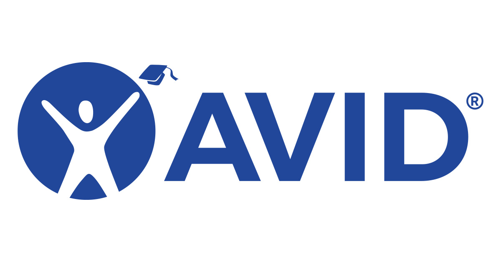

Mindy Ngo
I am currently a first year Political Science major at the University of California, Riverside. I hope to continue on to law school after completeing my undergraduate degree. I am also intreseted in doing research on underdeveloped countries and development itself.
I have previously worked for Kumon, a tutoring center for math and reading. There I worked with kids ages 4-16, helping them work through practice problems and teaching them new concepts and ideas. I also was a part of a hospice club that worked along side hopsice care workers to help those in hospice care be more comfortable. I was also an AVID peer tutor. AVID is a college readiness program and being a peer tutor meant that I oversaw tutorial and study sessions for a group of underclassmen. I helped keep them on track and made sure that they are able to make the transition to highschool smoothly and that they are prepared for apply to college and college in general.
In highschool I have taken a wide array of classes including multiple ap and honors classes. Some of which include AP Chemistry, AP Politcs and Government, and AP Literature and Composition. All of which I have scored a 4 or higher on the AP exam. I currently have a 3.75 gpa and am working on getting a position on an undergraduate research project.
Experience
Tutor
• Tutored students in math and reading
• Managed students documents and worked
• Helped check in and receive students
Hospice club
• Worked alongside hospice care workers and gave hospice care patients support
Education
University of California Riverside
Portfolio
